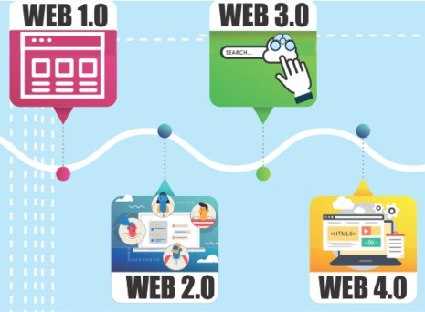
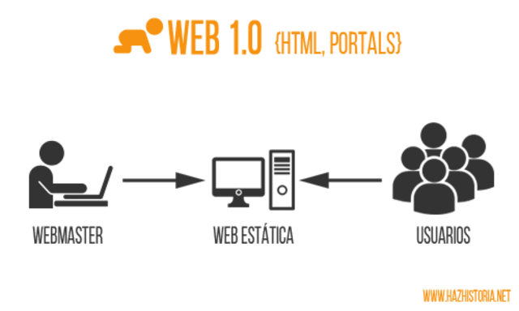
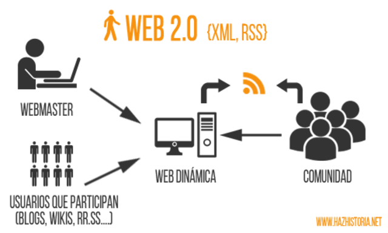

Evolución Web
Versiones de la web
la Web ha pasado por una evolución sorprendente. La Web 1.0 que se identifica por visualizar contenido estático. La Web 2.0 se caracteriza por permitir un contenido dinámico o interactivo, además de la llegada masiva de navegadores web. La Web 3.0 se identifica por el contenido colaborativo, ajustándose a los intereses de los usuarios. Los sitios web pueden comunicar a los usuarios un significado entendible e interpretable por las máquinas, de tal manera que existe una gran variedad de recursos para buscar y encontrar contenidos y servicios de interés que ofrece la Web. Y La Web 4.0 que se caracteriza por ser la Web emotiva, basándose en un ancho de banda de alta tecnología que permite al usuario obtener un mejor contenido [1].
La Web 1.0 - Web Estática
En los inicios de la Web, no se pensó en versiones, es así que, cuando aparecieron cambios sustanciales en la Web, los investigadores consideraron definir segunda versión de la Web, dejando a sus inicios como la versión inicial o versión 1.0 (Web 1.0). Por lo tanto, su periodo de duración fue desde su creación en el año 1990, hasta el año 2000. Se representaba de forma de sólo lectura, la cual existían pocos webmaster o productores de páginas web, es decir, una persona que se dedica a desarrollar una página web y agregar contiendo a la misma. Los usuarios únicamente podían visualizar datos estáticos y no podían interactuar con la página. Como se ilustra en la figura 2.1, la interacción se la consideraba como una funcionalidad limitada [1]. 
Características
Las características de La Web 1.0 están relacionadas principalmente por el tipo de conte- nido, la interacción con el usuario y el tipo de comunicación entre clientes (navegadores) y servidores (www) [1]. Las principales características que podemos mencionar son:
- Páginas estáticas
- Carga rápida de las páginas
- Dispersión del consumidor
- Contenido creado por organizaciones
- Baja frecuencia de cambios
- Falta de normas
- Falta de autenticación
- Muy pocos buscadores y navegadores
- Navegación poco estructurada
- Interacción con el usuario casi nula
- Diseño sencillo de páginas web [1].
La Web 2.0 - Web Social
La Web 2.0 conocida como la Web Interactiva. En este versión el usuario puede ingresar datos y recibir información. Por lo tanto, con La Web 2.0 aparecen nuevas tecnologías en Internet y las maneras de utilizarlas. Sin lugar a dudas la web 2.0 inició con una nueva era de interactuar en la red. Muchas de actividades cotidianas, se volcaron a la red, como por ejemplo buscar información, hacer compras, estudiar, hasta concertar citas pueden realizarse sin problemas, e incluso a menudo, más barata por la Red. Esta era inició en el año 2004. La Web 2.0 se dio con la aparición de las redes sociales, es por eso que es conocida como la Web Social [1]. 
Características
Al seguir la misma línea de la Web 1.0, las características de la Web 2.0, se relacionan con el contenido, el grado de interacción con el usuario, el tipo de comunicación entre los navegadores y la WWW [1]. Como características principales se pueden mencionar a las siguientes:
- Las páginas dejan de ser estáticas.
- Carga de las páginas.
- Dispersión del consumidor.
- Propietarios de los sitios web.
- Frecuencia de cambios.
- Estándares de diseño web.
- Autenticación de Usuarios.
- Abundantes buscadores y navegadores.
- Navegación estructurada.
- Interacción con el usuario.
- Diseño de sitios web [1].
La Web 3.0 o ¿la Web Semántica?
La Web 3.0 es una nueva versión de la Web. Aunque la versión 2.0 se puede considerar
muy diferente a su predecesora, no sucede eso entre la Web 2.0 y La 3.0. Sin desentonar
y guardando la armonía, se puede decir que la Web 3.0 es una Web extendida, con
el mayor significado, brindándole al usuario la posibilidad de encontrar respuestas a
sus preguntas de formas más significativa y rápida. Los expertos en Internet
no han unificado sus enfoques y opiniones sobre la actual versión de la Web, La Web
3.0 o ¿Web Semántica?. Tampoco se ponen de acuerdo en su fecha de aparición.
Según Latorre en, Web 3.0 como concepto apareció en 2006 y considera que en la
práctica, como una versión de la Web lo hizo en el año 2010. Los principales expertos
en tecnologías de la información consideran la Web 3.0 como una web semántica y de
personalización [1].

Elementos clave de la Web 3.0
La Web 3.0 se basa por que las aplicaciones web son clientes de aplicaciones web, es decir, la comunicación entre aplicaciones. Claramente se nota que esta es la era en la que las aplicaciones web son muy fáciles de desarrollar, pueden ser usadas desde cualquier dispositivo, permiten a los usuarios compartir audio y video en directo (video streaming). Los motores de búsquedas dan como resultados información más completa y específica, los usuarios no deben especificar claramente lo que buscan. Los usuarios de redes sociales se enfrentan a aplicaciones más inteligentes, con mayores posibilidades de compartir con sus amigos. Se ha vivido desde algunos años atrás la era de los datos e información masiva. Todo esto gracias a los elementos claves de la Web 3.0 [1]. A continuación presentamos estos elementos (los más importantes):
- Web Social.
- La web semántica.
- Web 3D.
- La Web centrada en los medios.
- La Web Omnipresente y Ubicua (WOU).
- Inteligencia Artificial [1].
La Web 4.0 o ¿Internet de las Cosas?
La Web 4.0, aunque aún no llega a su momento más importante, ha sido el gran
avance centrado en ofrecer un comportamiento más inteligente, más predictivo, de
modo que, con sólo realizar una afirmación o petición se pueda poner ejecutar acciones
que tendrán como resultando aquello que se ha expresado. Es la que ha abierto la
posibilidad de interactuar con el medio físico, y que éste responda a nuestras necesidades
según el contexto. Esto se conoce como parte de “Internet de las cosas” o IoT por sus
siglas en inglés (Internet of Things). IoT es el mundo interconectado, es la posibilidad
de que los objetos físicos estén presentes en el mundo digital, es la oportunidad para
mejorar el estilo de vida (cuidado, trabajo, ocio, estado emocional) de las personas. Un
sistema basado en IoT interconecta objetos físicos, personas, procesos y datos. Objetos
físicos dotados de inteligencia para apoyar al ser humano en la toma de decisiones de
su día a día [1].

Elementos de la Web 4.0
Mucho de lo que hay ya es de la Web 4.0, sin embargo será aún más diferente. Cuando esté completamente desarrollado, eliminará varios de los pasos necesarios al usar la Web 3.0, de esta manera su uso será más directo e “invisible” [1]:
- Los motores de búsqueda
- Una Red activa
- Big Data
- Aplicaciones web Inteligentes [1].
Referencias
[1] G. Guerrero Ulloa, Tecnologías para el desarrollo de aplicaciones web, Quevedo, 2021.